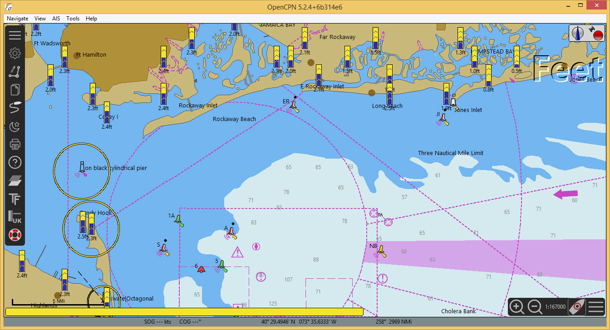
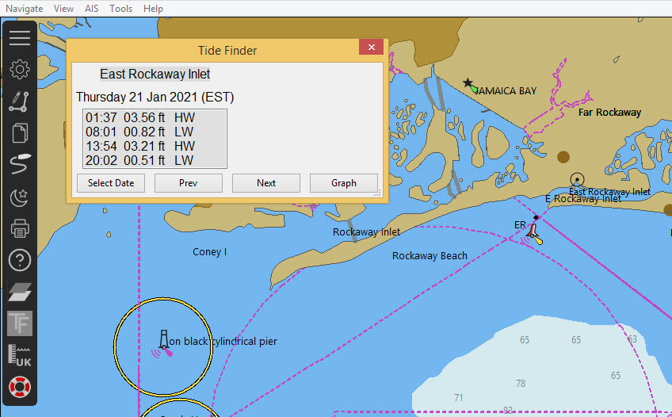
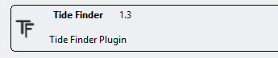
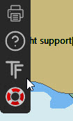
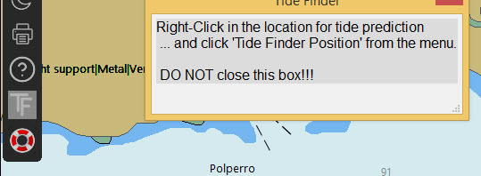
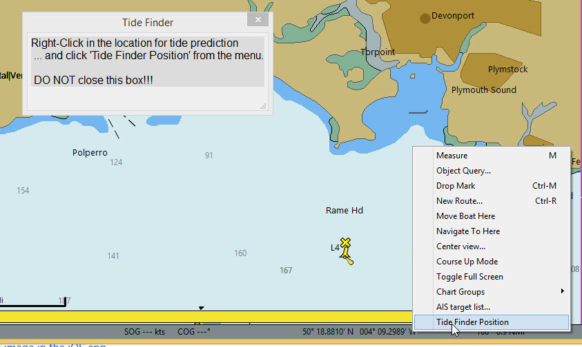
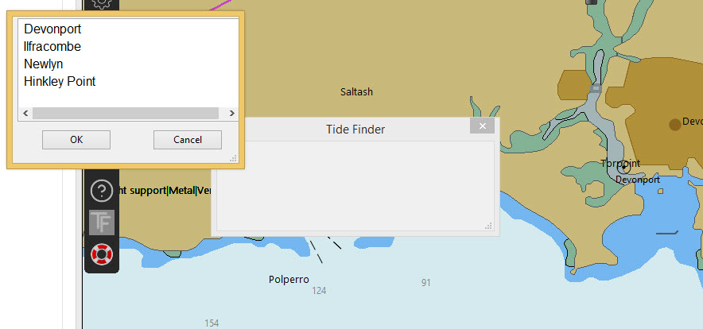
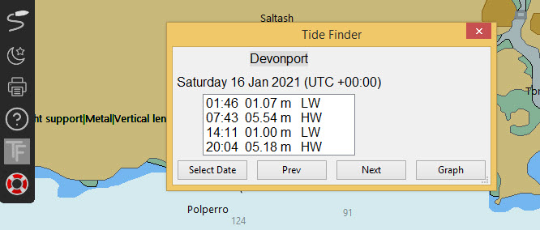
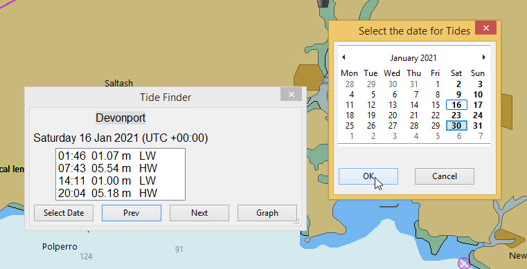
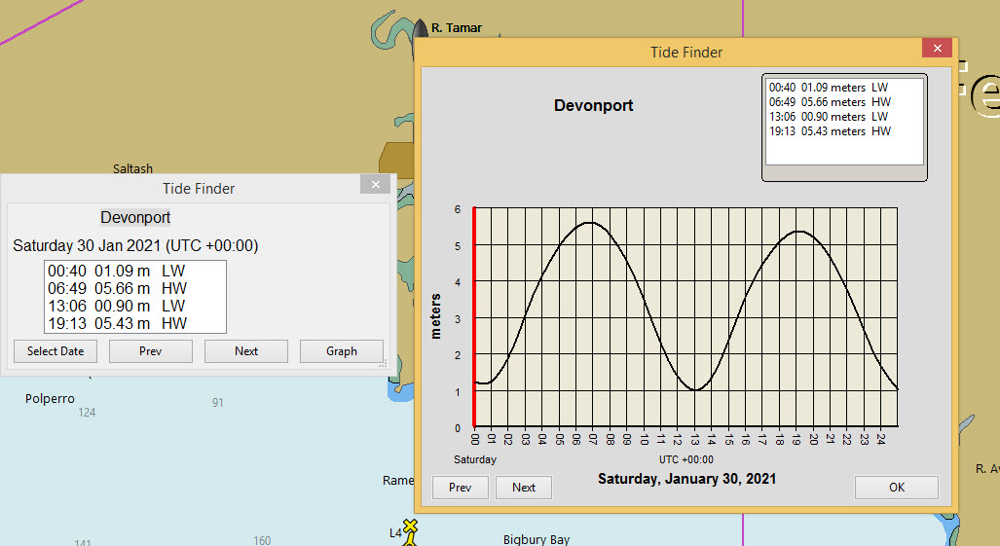

TideFinder
Aim
Help for tide predictions, with greater flexibility for selecting the date and time for the predictions. Time Zone used is the computer clock time.
Links
-
Source: Github Repository
-
Releases: Github Releases
Aim
To simplify the prediction of tidal heights for dates many days in the future (past).
Normally many tide stations are shown on the chart when this option is selected.

TideFinder selects the four closest tidal stations within a range of 100nm.
One of these can be selected and prediction data displayed in a similar way to the base program.

1. What and Why
The tidal prediction available from the core OpenCPN program is good for the current date/time and a few days into the future. This plugin uses a calendar to allow predictions for a date/time many days into the future (or the past). It also limits the number of ports to those closest to the location of the boat.
2. Install
The plugin is available in the Beta catalog of the plugin manager. After installation the TideFinder plugin is added to the list and can be enabled.

Once enabled the icon for TidalFinder is shown in the toolbar:

3. Standard actions
Click on the TideFinder icon.

An information box appears on the screen. Keep this box open. The box will be used to display the tidal heights.
Right-click on the region where the tide predictions are required. On the menu you will find “TideFinder position”.

Using this menu option a listbox appears with the four tidal stations that are available within 100nm.

Select the station.
Heights of high water / low water are shown for the present date.

The calendar button displays a calendar dialog that can be used to select a date for predictions in the future/past.

Previous/Next and Graph options work in the same way as the main program.
